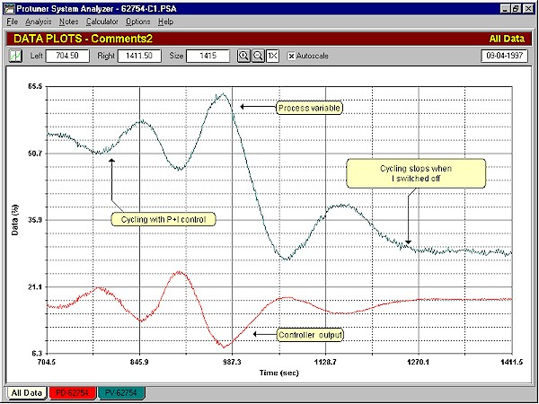
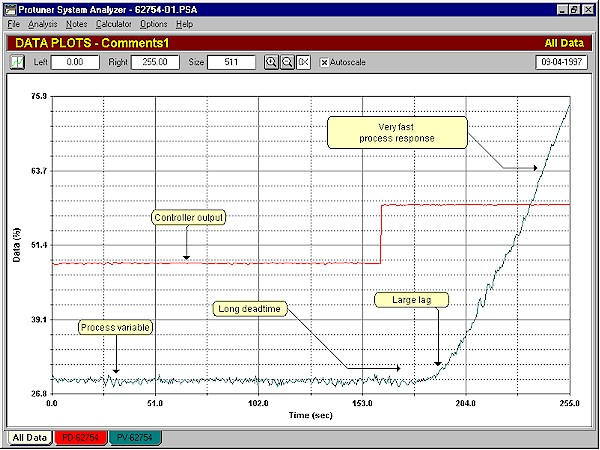
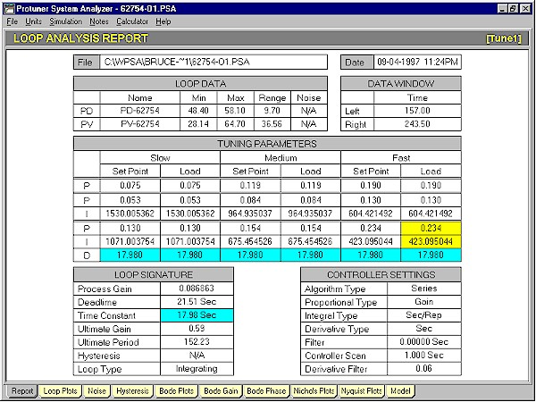
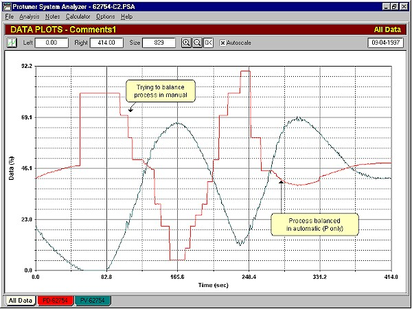
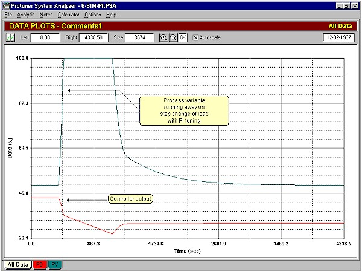
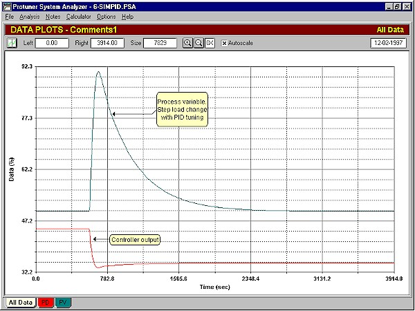

|
| [Home] [About us] [Contact us] [Training] [Optimisation services] [Protuner] |
| [Loop signatures] [Case histories] [Continuous loop performance monitoring] |
|
Control Loop Case History 30 USING DERIVATIVE ON INTEGRATING LOOPS In a previous article it was mentioned that the "D" term should be used on integrating processes where a large lag is present. The example used here (which is also taken from the oil rig in the North Sea), illustrates this beautifully. The process in question is the control of the level in a deaerator, with which problems had been experienced. Large load disturbances occurred occasionally, and the control was too slow to catch them, and the plant would trip. Figure 1 shows the closed loop "as found" test with the original tuning in the controller. As can be seen in the figure, the loop is in a continuous cycle. This is pretty typical of integrating loops, and is generally caused by poor setting of the I term. Also hysteresis in the valve together with the I term cause continuous cycling.  Figure 1 Before one can perform an open loop test on an integrating process, it is necessary to ascertain the balance point of the controller output (process demand), so that on switching to manual, the process variable (level signal) remains constant and does not run away. It is much easier to find the balance point in automatic than in manual, as a well tuned controller will always brings the process demand to the balance point. Therefore it is mandatory that the cycling be eliminated first. This is easily accomplished in most cases merely by switching off the I and D terms in the controller. Figure 1 shows how quickly the cycling stopped once the I and D term were switched out. The balance point is the value of the process demand after the cycling has stopped.  Figure 2 Figure 2 shows a portion of the open loop test. The process was initially at balance with the process variable being nice and steady. The output of the controller was then stepped up. After a significant deadtime of approximately 18 seconds the level started rising. Such a long deadtime is most unusual in a level process. Another most surprising and unexpected development is the way the level actually stared moving. It curved up slowly into the ramp. Such a curve is the result of a large first order lag normally associated with batch temperature and gas pressure type integrating processes. It is usually only found in level processes where large filters have been placed on the process variable, either in the transmitter or on the input to the controller. In this case there were no filters configured in either place. Normally one would try to find out exactly why such unusual process responses were occurring, but time constraints on the rig prevented this. The author would be happy to hear from readers who may be able to shed some light on these responses, as they are unusual for a deaerator Apart from these characteristics, the actual ramp rate of the level was extremely fast. This means that the process gain of the deaerator was relatively large. Combined with a long deadtime and large lag, it makes the process extremely difficult to control. Figure 3 is the Protuner Loop Analysis Report. It should be noted in the "Loop Signature" in the bottom left portion of the report, that the analyser determined that the process had a gain of 0.087, a deadtime of 21.5 seconds, and a dominant lag of 18 seconds. Also in the PID tuning parameters it can be seen that the D term has been set equal to 18 seconds. When it is set equal to the process lag in an integrating process the derivative and the lag cancel each other. Therefore wherever possible, the D term should be used if a lag is present in an integrating process.  Figure 3 Integrating processes are best controlled without the I term if possible, as has been discussed in a previous article. However it can also be observed that the Protuner had calculated a tiny proportional gain for the controller of less than 0.2. This is because the process gain was very high for an integrating process. Such a small proportional gain makes the use of the I term mandatory, in order to prevent impossibly large offsets on load change. Figure 4 has been put in for interest as it shows how the Operator vainly tried to get the loop back to balance in manual, after the step open loop test had been performed. Eventually after much persuasion he put it back into automatic with only the P term in the controller. Once again the loop rebalanced itself.  Figure 4 To illustrate the effectiveness of the D term in this process, Figure 5 shows the response of the process to a 10% load change with P+I tuning, and Figure 6, the response with P+I+D tuning. These tests were performed on the Protuner simulator, as for obvious reasons the rig personnel were very reluctant to try it on the real process. The control could not catch the load upset with P+I, but just managed to hold it with P+I+D.  Figure 5  Figure 6 Michael
Brown is a specialist in control loop optimisation, with many years of
experience in process control instrumentation. His main activities are
consulting, and teaching practical control loop analysis and
optimisation. He gives training courses which can be held in clients'
plants, where students can have the added benefit of practising on live
loops. His work takes him to plants all over South Africa, and also to
other countries. He can be contacted at:
|